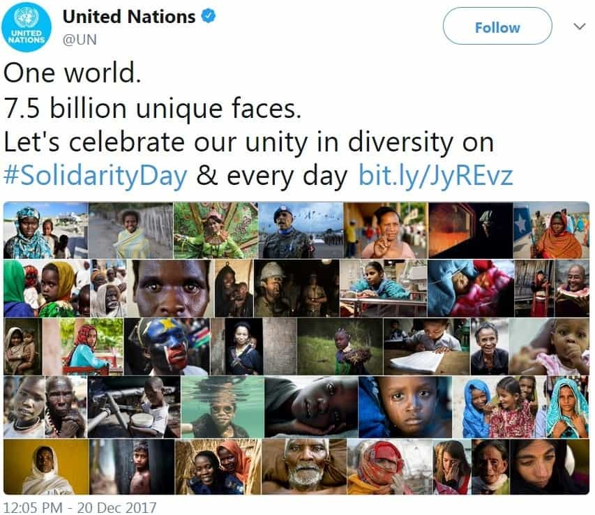
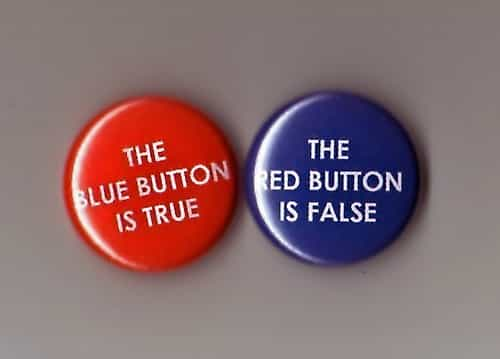
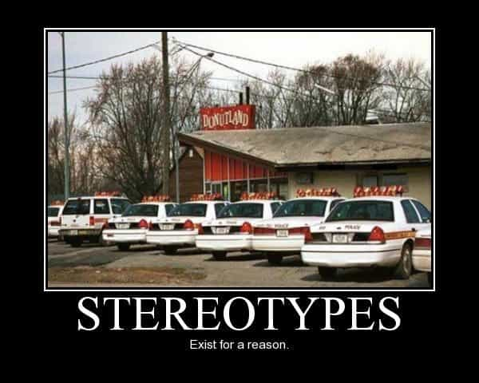

The spark is dying out for literature, once a major facet of culture. Television, movies, and digital distractions compete heavily for the public’s attention. Media monopolization doesn’t help. (How often do they give us new writers as good as Orwell or Dostoyevsky?) Worse, their politically correct tyranny is putting the final nail into the coffin.
It’s about how you look, not how you write

Notice anything missing here???
As we’ve covered earlier, straight White guys are unwelcome as new authors, especially for serious highbrow novels. The New York literary establishment excludes much talent. Established writers can keep making money for the corporations. However, guys like Melville, Poe, Twain, Faulkner, Hemingway, Kerouac—to name a very few—today would face great difficulty getting the critical first sale. Some genres like science fiction aren’t as bad, though that’s been converged too.
“Inclusiveness” is the trendy justification. Some argue that women and minorities™ were underrepresented in the past. However, ethnic literature has been quite fashionable since the 1960s. Women and GLBTs have been writing since Sappho. Furthermore, shutting out everyone except them certainly isn’t inclusive! Talent should stand on its own merits.
Can a one-legged genderqueer Scientologist lesbian from Timbuktu write well? If she’s talented, then yes. However, ticking several diversity checkboxes doesn’t make her a better author than anyone else.
The diversity dilemma

If only it were this simple.
For those who beat the odds, it’s basically impossible to write anything without potentially catching flak. There are several style guides for politically correct writing, and some make the income tax code seem pretty straightforward by comparison. According to various opinions:
- If a story doesn’t include enough women and minorities™, that’s not inclusive.
- Including them to be inclusive is tokenism.
- Portraying them negatively is bad.
- Overdoing positive traits is patronizing.
- Any common characteristic that might be remotely stereotypical is very bad.
- It’s impossible to write accurately about them without being one, so that’s taboo.
What the hell do they want? Even Kafka couldn’t have imagined anything screwier!
That’s quite a tightrope to walk. Even stories where diversity is unrealistic—for instance, European musketeers defending a fort—run afoul of the first item, since women and minorities™ might not identify with the characters. Actually, appealing to everyone is impossible; that’s why subgenres exist.
Even so, people can enjoy stories about glamorous professions or far-off lands, even if they have no experience in these things. This can help readers understand others unlike them, and even build bridges. Liberal writers once did much to publicize minority perspectives. Today, they might find themselves tiptoeing through a minefield, despite trying to be sympathetic.
If a story’s cast resembles a New York subway crowd, all characters sensitively developed following painstaking research, with no negative traits and only modestly positive ones, it would be tedious. Even then, that doesn’t avoid the “no characters from groups you’re not part of” rule. If authors only write about talking animals, aliens, or fantasy creatures—which would be quite restrictive—they can’t resemble human cultures even coincidentally, or sensitivity taboos still apply.
Other formats, such as film, have this problem too. George Lucas took a lot of heat for alluded stereotypes in The Phantom Menace. All that’s arguable, but the criticism was worse for that than the lame script. (Did I just say “lame”—uh oh, that’s ableism!) In his defense, though, JarJar Abrams didn’t do much better.
Writing characters that will appeal to a genre’s specific audience makes good business sense. Science fiction books often have intelligent, relatively young guys and sexy love interests. Presumably gay literature has more than 2-3% GLBT characters. Romance novels have female protagonists typically courted by handsome, rich bachelors. Why mess with what works?
Really, this PC literary fad is silly. Would The Caine Mutiny have been a better book if the protagonist were a genderfluid nonbinary? Actually, that would’ve been an annoying, unnecessary distraction.
Avoiding butthurt stereotypes

At least you still can get away with this.
There’s much hand-wringing over avoiding stereotypes, even positive ones. For starters, heavy dialect and accents are taboo. (There goes a lot of great literature since the 1850s: Dickens, Twain, etc.) Another example is that writers shouldn’t feature Asian martial artists. It would be silly to make every Japanese character a karateka, unless the story was set in a dojo. Still, when did martial arts stop being part of Asian culture? The list goes on.
Real-life individuals don’t always match their group stereotypes, of course. However, often there’s at least a kernel of truth. Are Haitians reputed as being great at math and liking animation? Do Norwegians get a bad rap for tightly-knit organized crime syndicates? Are Pentecostals associated with goofy leftist causes and being tightwads? If anyone portrayed the foregoing that way (unlike groups usually associated with those things), it wouldn’t be believable because of the lack of real examples.
Really, it works against realism to avoid any characteristic that might be considered stereotypical. That said, some groups are exempt from these fine scruples. To name a few:
- Dumb, hostile rednecks
- Crooked and/or brutal cops
- Sadistic German officers
- Fundamentalists motivated by hate or hiding moral flaws
Those are a bit overblown, but nobody’s walking on eggshells for them! Perhaps political correctness isn’t really about being kind and sensitive to everyone?
Distress about damsels

Fortunately for Big Red, the MRAs she cursed out and screamed at were decent, peaceful people. Otherwise, she would’ve had to find a policeman.
Another PC edict forbids portraying men rescuing women. They’re strong and independent; they don’t need no man! (Apparently much past literature deserves to go down the memory hole then…) This one certainly makes those empowered feminists clutch their pearls. However, this new taboo subtly conveys the message that seeking assistance is always wrong.
In the real world, occasionally people face danger, and women are no exception. (Our protective instincts are sometimes exploited, unfortunately.) If genuinely in trouble, she certainly should take any necessary action to help herself. If the situation is more than she can handle, though, a man’s assistance is quite useful, and preferably not a hipster soy boy. (A word of gratitude would be appreciated, though that might be asking the impossible lately.) Seeking help when appropriate is sensible, feminist hauteur be damned.
Besides that, stories and movies portraying women able to defeat four opponents twice her size do a great disservice to anyone internalizing them. Some of today’s women act overly aggressive and confrontational, far more commonly than ever before. However, overconfidence is bad for anyone. I can defend myself quite effectively if needed, but I prefer diplomacy, and I won’t go out of my way to antagonize anyone.
The solution

The six megaconglomerates that comprise the MSM also own the major publishing houses.
Modern literature has pretty much gone to hell, thanks to politically correct munchkins being appointed gatekeepers in the mainstream publishing houses. What can be done about this? In successful insurgencies, often the winning dissidents will set up parallel institutions. Eventually they replace the establishment institutions.
Fortunately, modern technology is making those munchkins obsolete. Anyone with talent can create ebooks and even printed books. The gatekeepers are only good for promotion and sales; the remaining step is to create ways to generate our own publicity. The PC Cultural Revolution is about due for a counterrevolution. Some alternative institutions of our own already exist now. Spread the word; the adventure begins!
Read More: How New York Killed Male Literature